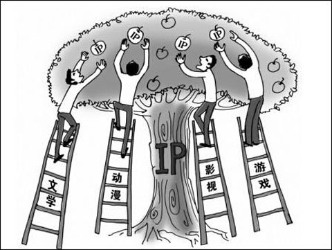

2016DCC：论泛娱乐IP对游戏行业的统治力
【DCC简介】 峰会时间：2016年4月29日-30日 峰会地点：厦门国际会展中心 峰会单元：电竞、展览、高峰论坛 峰会人数：约2-3万人次 峰会受众：游戏、终端、硬件、金融等企业;投资方;玩家;媒体;电竞明星、电竞团队等 “泛娱乐”一词自从2014年初被文化部产业报告收录以后，迅速成为互联网发展一大趋势。泛娱乐——指的就是基于互联网与移动互联网的多领域共生，打造明星IP的粉丝经济，泛娱乐核心就是IP。IP即知识产权(intellectualproperty)，对于游戏厂商和运营商来讲，电影/电视剧、电视节目、动漫、文学作品、甚至老游戏都可以延伸打造IP。绝大多数人都会觉得把游戏结合IP应该是一个绝妙的营销好概念，认为这样做可以降低用户认知成本，减少传播和推广的成本，迅速拉量留存，增加其曝光度，怎么看都是好处大大的。 于是游戏厂商和运营商们一致看好IP泛娱乐行业发展，开始扎堆投资将其转换成游戏，希望能够通过这样模式来大量变现。取得成功的泛娱乐IP确实不在少数，我们可以随意想到很多，比如来自影视剧的《花千骨》，来自动漫的《我是MT》，综艺节目的《爸爸去哪儿》，自有IP引申的《梦幻西游手机版》、自创新IP的《吕布必须死》等等，这些IP本身的流水和改变成游戏带来的流水确实不少，利润暂且不提，但确实赚到了钱。
我们换一个角度，从玩家角度来说，更多时候玩家需要的是一款好游戏，而不是一个好的泛娱乐IP盲目地改编。比如说厂商斥巨资签下了一个重量级泛娱乐IP，在前期大肆宣传吊胃口，游戏做出来后却只是一款有浓重的中国特色山寨气息、做工粗糙的换皮之作，这样能活么?厂商想当然地认为：有了个好IP就能容易吸引到玩家，玩家就能哗哗哗地投币。但问题在于，面对一款粗制滥造的游戏，玩家也不是傻子没那么容易就买账——即便游戏的质量还不错，也未必能吸引到那么多的玩家，2014年的夏天希望通过世界杯大捞一笔的公司，十之有九都撞了南墙。作为玩家，就算这个游戏最开始他是被IP给吸引过来，但是一旦玩起来不爽了，他还会继续掏钱玩或者免费再体验一会儿么? 还要提一下，哪怕你的IP再贵再好，泛娱乐点切的再完美，“相关部门”叫你干什么你就得干什么。去年上半年，文化部发文下力度整顿网络动漫产品，众公司已经签约的十数个日本动漫IP被禁，导致改编游戏产品项目直接下马，前期的努力和签约金灰飞烟灭。不仅是东瀛文化，国产动漫IP也受到点名批评勒令整改，腾讯投入重金孵化的动漫IP《尸兄》在日程上就受到了不小影响。老虎的屁股摸不得。 以上说的都是泛娱乐IP改编游戏，反过来游戏改编的泛娱乐产品也有一些，比如之前已经播出的《仙剑奇侠传》和《轩辕剑之天之痕》，还有大家翘首以盼多年的《魔兽世界》电影以及完美世界即将把主力IP《诛仙》改编的电视剧。说到《诛仙》，与仙剑和轩辕剑两部已经播出的剧不同，广电总局在备案时制作方将其名字改成了《青云志》，名字的修改对这部电视剧来说瞬间失去了认知度。为何改名，主要问题就是出在《诛仙》更多被大众认为是一款游戏，电视剧《诛仙》到底是一部电视剧还是一款网游的宣传广告?也许主管部门认为有待商榷，但电视媒体一直以来都是受到严控的内容管道，可能不久后我们看到的《魔兽世界》电影引入后也要改名和删减剧情，改成叫神秘大陆或者众神世界什么的你也别吐血。 说到底无论是先有泛娱乐IP、再造游戏，还是先有游戏IP、再造泛娱乐产品，都是可行的。如果你问：“未来泛娱乐IP是否会对游戏行业形成统治力?”对于这个问题我是持谨慎态度的，因为相对于游戏好不好玩，玩家不会太在意你的IP有多精彩。一款真正的好游戏，和IP无关，游戏做得好，它本身就成了IP，一款IP再好，游戏做得渣，最后只能瞎。我只能说，请遵守市场规律和国家规定，用心做好一杯良心奶，别做游戏界的三鹿。 2016年4月29-30日，由中国音数协游戏工委、厦门市政府指导，中国游戏产业网主办的“2016DCC中国数字产业峰会”将于厦门召开。DCC大会以推动整个游戏行业技术进步为己任，深入挖掘2016年游戏行业前沿话题。届时微影时代CEO林宁将作为嘉宾出席大会，围绕泛娱乐IP话题发表观点，另外还有来自游戏业内的数十位知名人士、投资人和厂商代表们将做数十场主题演讲和闭门讨论。我们希望通过大会来宾的集思广益，游戏行业在未来的产业链上能呈现多种形式的泛娱乐精品发展，游戏产品能体现出更高文化价值与含金量。